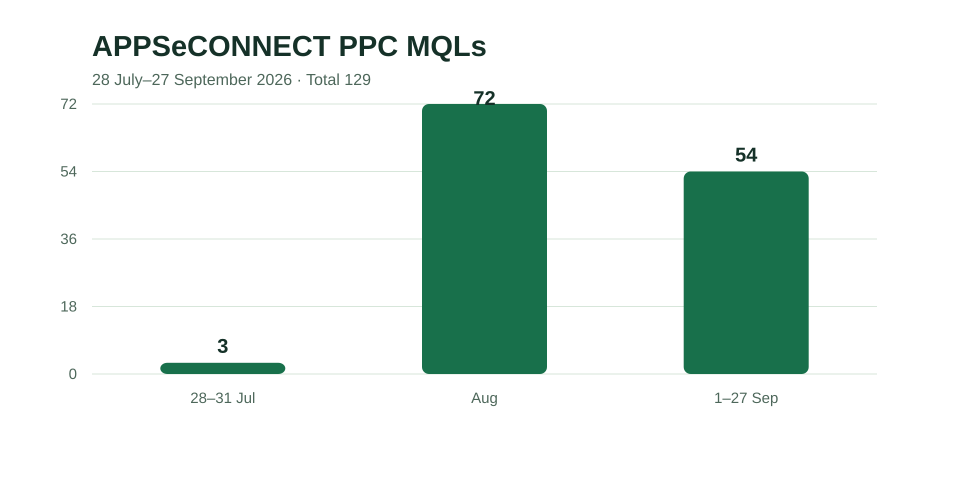
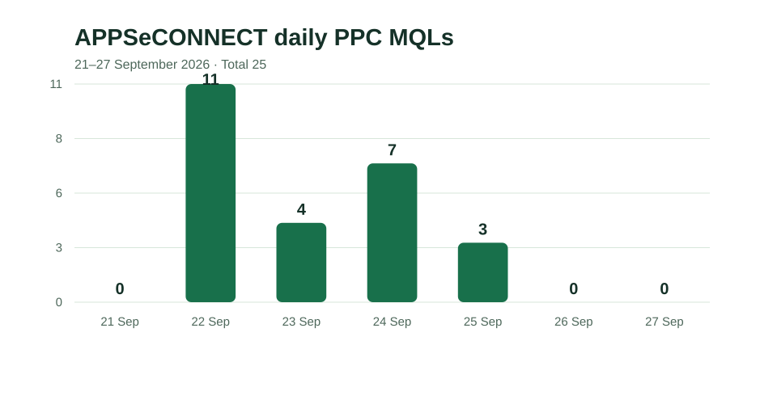

Search intent
Organize campaigns around ERP, commerce and CRM combinations. Review queries for fit before expanding bids or excluding traffic.
B2B SaaS · Paid growth
I rebuilt and refined Google Search around specific ERP, ecommerce and CRM connections, then connected campaign decisions with page relevance and lead measurement.
01 · Context
Integration buyers often name the systems they want to connect. A precise query can lose relevance if it reaches a generic ad or an unrelated page. APPSeCONNECT’s paid Search program needed campaign structure and messaging that reflected those use cases, alongside reliable lead measurement.
In the 22–30 July Search checkpoint, 71.82% of available impressions were lost to rank. Later account reviews found substantial spend on low-quality-score keywords and below-average expected CTR. This called for work on intent, ad relevance and page fit alongside bid decisions.
02 · Strategy
Organize campaigns around ERP, commerce and CRM combinations. Review queries for fit before expanding bids or excluding traffic.
Review the promise in the ad against the destination page and form path for six priority integration themes.
Test onsite lead activity and bring a verified form event into Google Ads for three SAP Business One campaigns.
Use keyword quality, query intent, page findings and MQL volume to set the next optimization priority.
03 · Execution
I rebuilt the Search foundation in July and continued refining the expanded account as additional integration themes went live. The work included search-term and keyword reviews, ad-copy decisions, campaign-specific bid-cap changes, and page recommendations for Shopify, Amazon, WooCommerce, HubSpot, Zoho and Salesforce themes.
On the WooCommerce-to-Zoho page, a successful test submission produced `gtm.formSubmit` and GA4 `generate_lead`; an unsuccessful test did not. The tested `generate_lead` event was imported as a Primary Google Ads conversion for three SAP Business One campaigns.
Page reviews surfaced changes to make. The review alone is not evidence that every recommended page change was implemented.
04 · MQL results

| Period | MQLs |
|---|---|
| 28–31 July 2026 | 3 |
| August 2026 | 72 |
| 1–27 September 2026 | 54 |
| Total | 129 |
21–27 September contributed 25 MQLs.

| Date | MQLs |
|---|---|
| 21 Sep | 0 |
| 22 Sep | 11 |
| 23 Sep | 4 |
| 24 Sep | 7 |
| 25 Sep | 3 |
| 26 Sep | 0 |
| 27 Sep | 0 |
| Total | 25 |
05 · Campaign readout
In two adjacent eight-day Search windows, clicks increased from 64 to 88 while spend increased from ₹32,800.73 to ₹50,764.10. The later window crossed bid and ad-copy changes, so the movement is a descriptive account read rather than an estimate of the effect of any one change.
| Search metric | 26 Aug–2 Sep | 3–10 Sep |
|---|---|---|
| Clicks | 64 | 88 |
| Spend | ₹32,800.73 | ₹50,764.10 |
| Average CPC | ₹512.51 | ₹576.86 |
The next priority was to improve relevance and economics while keeping MQL volume visible in the review.
06 · Learning
Search visibility and click capture can improve while acquisition costs rise. I connect query intent, page experience and MQL feedback in the same review so the next campaign decision responds to the whole path.